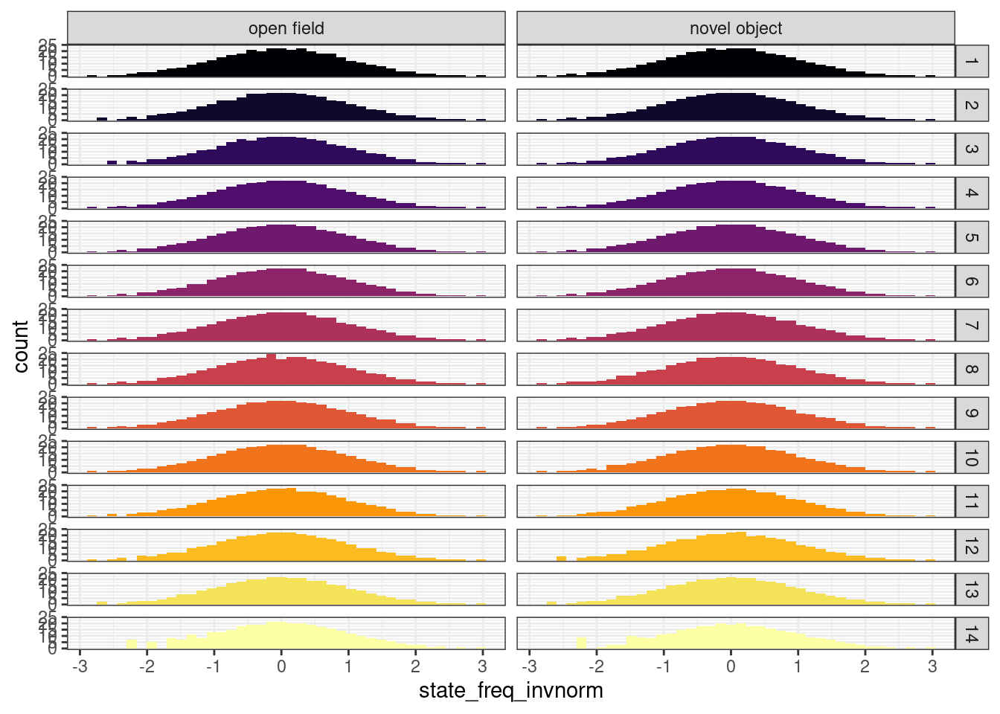

7 Model proportion of time spent in HMM states
7.1 Read in and clean data
IN = "/hps/nobackup/birney/users/ian/pilot/hmm_out/0.08/dist_angle/14.csv"
N_STATES = 14
# Read
raw = readr::read_csv(IN)
#> Rows: 9152328 Columns: 15
#> ── Column specification ────────────────────────────────────
#> Delimiter: ","
#> chr (6): assay, ref_fish, test_fish, tank_side, quadrant...
#> dbl (9): date, time, frame, seconds, x, y, distance, ang...
#>
#> ℹ Use `spec()` to retrieve the full column specification for this data.
#> ℹ Specify the column types or set `show_col_types = FALSE` to quiet this message.
# Create line recode vector
line_vec = c("iCab", "HdrR", "HNI", "Kaga", "HO5")
names(line_vec) = c("icab", "hdr", "hni", "kaga", "ho5")
# Clean
df = raw %>%
# Get individual
tidyr::unite(date, time, quadrant, fish,
col = "indiv",
remove = F) %>%
# add `line` %>%
dplyr::mutate(line = dplyr::case_when(fish == "ref" ~ ref_fish,
fish == "test" ~ test_fish)) %>%
# recode and order `assay`
dplyr::mutate(assay = stringr::str_replace(assay, pattern = "_", " "),
assay = factor(assay, levels = c("open field", "novel object"))) %>%
# recode and order `line`
dplyr::mutate(line = dplyr::recode(line, !!!line_vec),
line = factor(line, levels = line_vec)) %>%
# convert `date` to factor
dplyr::mutate(date = factor(date))
# Recode states by mean distance
rank_df = df %>%
dplyr::group_by(state) %>%
dplyr::summarise(mean_dist = mean(distance)) %>%
# rank
dplyr::arrange(mean_dist) %>%
dplyr::mutate(rank = 1:nrow(.))
recode_vec = rank_df %>%
dplyr::pull(rank)
names(recode_vec) = rank_df %>%
dplyr::pull(state)
# Recode `state`
df = df %>%
dplyr::mutate(state_recode = dplyr::recode(state, !!!recode_vec),
state_recode = factor(state_recode, levels = recode_vec))7.2 DGE
# Get proportion of time each fish spent in each state
df_dge = df %>%
# remove iCab when paired with a different test fish
dplyr::filter(!(fish == "ref" & test_fish != "icab")) %>%
## count rows per fish per state
dplyr::count(indiv, assay, line, date, time, quadrant, tank_side, state_recode) %>%
# add total row count per fish
dplyr::add_count(indiv, assay, line, date, time, quadrant, tank_side, wt = n, name = "nn") %>%
# get proportion of time fish spent in each state
dplyr::mutate(state_freq = n / nn)
# Split by assay
df_dge %>%
ggplot() +
geom_histogram(aes(state_freq, fill = state_recode),
bins = 40) +
facet_grid(rows = vars(state_recode),
cols = vars(assay)) +
theme_bw() +
scale_fill_viridis_d() +
guides(fill = "none")
7.2.1 Inverse-normalise
# Add function
invnorm = function(x) {
res = rank(x)
res = qnorm(res/(length(res)+0.5))
return(res)
}
df_dge = df_dge %>%
dplyr::group_by(assay, state_recode) %>%
dplyr::mutate(state_freq_invnorm = invnorm(state_freq)) %>%
dplyr::ungroup() %>%
dplyr::arrange(indiv, assay, line, date, time, quadrant, tank_side, state_recode)
df_dge %>%
ggplot() +
geom_histogram(aes(state_freq_invnorm, fill = state_recode),
bins = 40) +
facet_grid(rows = vars(state_recode),
cols = vars(assay)) +
theme_bw() +
scale_fill_viridis_d() +
guides(fill = "none")
7.2.2 Calculate variance explained
aov_dge = df_dge %>%
dplyr::group_by(assay, state_recode) %>%
tidyr::nest() %>%
dplyr::mutate(model = purrr::map(data, ~aov(
state_freq_invnorm ~ date + time + quadrant + tank_side + line,
data = .))) %>%
select(-data) %>%
dplyr::mutate(model_tidy = purrr::map(model, broom::tidy)) %>%
tidyr::unnest(model_tidy) %>%
rstatix::adjust_pvalue(p.col = "p.value", method = "fdr") %>%
rstatix::add_significance(p.col = "p.value.adj")
DT::datatable(aov_dge %>%
dplyr::select(-model),
options = list(pageLength = nrow(aov_dge)))7.2.3 Save to Google Drive
To aov_state_freq here: https://docs.google.com/spreadsheets/d/1_l72BZkmWyNAOfCUI8WGP4UfQuIPQtPZZmlRjQffvEs
# Open field
dge_tbl_of = aov_dge %>%
dplyr::filter(assay == "open field") %>%
# add variance explained
dplyr::group_by(assay, state_recode) %>%
dplyr::mutate(tot_ss = sum(sumsq)) %>%
dplyr::ungroup() %>%
dplyr::mutate(var_expl_perc = (sumsq / tot_ss) * 100 ) %>%
# select and rename key columns
dplyr::select(State = state_recode,
Variable = term,
Statistic = statistic,
`p-value` = p.value,
`p-value FDR-adj` = p.value.adj,
`Significance (p-value FDR-adj)` = p.value.adj.signif,
`Variance explained (%)` = var_expl_perc) %>%
# show only 2 decimals
dplyr::mutate(dplyr::across(c("Statistic",
#"p-value",
"Variance explained (%)"),
~ format(round(.x, 2), nsmall = 2)))
## Write to google sheet
googlesheets4::write_sheet(
data = dge_tbl_of,
ss = "https://docs.google.com/spreadsheets/d/1_l72BZkmWyNAOfCUI8WGP4UfQuIPQtPZZmlRjQffvEs",
sheet = "DGE_OF")
#> ! Using an auto-discovered, cached token.
#> To suppress this message, modify your code or options to
#> clearly consent to the use of a cached token.
#> See gargle's "Non-interactive auth" vignette for more
#> details:
#> <https://gargle.r-lib.org/articles/non-interactive-auth.html>
#> ℹ The googlesheets4 package is using a cached token for
#> 'brettell@ebi.ac.uk'.
#> Auto-refreshing stale OAuth token.
#> ✔ Writing to "aov_state_freq".
#> ✔ Writing to sheet 'DGE_OF'.
# Novel object
dge_tbl_no = aov_dge %>%
dplyr::filter(assay == "novel object") %>%
# add variance explained
dplyr::group_by(assay, state_recode) %>%
dplyr::mutate(tot_ss = sum(sumsq)) %>%
dplyr::ungroup() %>%
dplyr::mutate(var_expl_perc = (sumsq / tot_ss) * 100 ) %>%
# select and rename key columns
dplyr::select(State = state_recode,
Variable = term,
Statistic = statistic,
`p-value` = p.value,
`p-value FDR-adj` = p.value.adj,
`Significance (p-value FDR-adj)` = p.value.adj.signif,
`Variance explained (%)` = var_expl_perc) %>%
# show only 2 decimals
dplyr::mutate(dplyr::across(c("Statistic",
#"p-value",
"Variance explained (%)"),
~ format(round(.x, 2), nsmall = 2)))
## Write to google sheet
googlesheets4::write_sheet(
data = dge_tbl_no,
ss = "https://docs.google.com/spreadsheets/d/1_l72BZkmWyNAOfCUI8WGP4UfQuIPQtPZZmlRjQffvEs",
sheet = "DGE_NO")
#> ✔ Writing to "aov_state_freq".
#> ✔ Writing to sheet 'DGE_NO'.7.3 SGE
# Get proportion of time each fish spent in each state
df_sge = df %>%
# take all iCab fishes
dplyr::filter(line == "iCab") %>%
## count rows per fish per state
dplyr::count(indiv, assay, test_fish, date, time, quadrant, tank_side, state_recode) %>%
# add total row count per fish
dplyr::add_count(indiv, assay, test_fish, date, time, quadrant, tank_side, wt = n, name = "nn") %>%
# get proportion of time fish spent in each state
dplyr::mutate(state_freq = n / nn)
# Split by assay
df_sge %>%
ggplot() +
geom_histogram(aes(state_freq, fill = state_recode),
bins = 40) +
facet_grid(rows = vars(state_recode),
cols = vars(assay)) +
theme_bw() +
scale_fill_viridis_d(option = "inferno") +
guides(fill = "none")
7.3.1 Inverse-normalise
df_sge = df_sge %>%
dplyr::group_by(assay, state_recode) %>%
dplyr::mutate(state_freq_invnorm = invnorm(state_freq)) %>%
dplyr::ungroup() %>%
dplyr::arrange(indiv, assay, test_fish, date, time, quadrant, tank_side, state_recode)
df_sge %>%
ggplot() +
geom_histogram(aes(state_freq_invnorm, fill = state_recode),
bins = 40) +
facet_grid(rows = vars(state_recode),
cols = vars(assay)) +
theme_bw() +
scale_fill_viridis_d(option = "inferno") +
guides(fill = "none")
7.3.2 Calculate variance explained
aov_sge = df_sge %>%
dplyr::group_by(assay, state_recode) %>%
tidyr::nest() %>%
dplyr::mutate(model = purrr::map(data, ~aov(
state_freq_invnorm ~ date + time + quadrant + tank_side + test_fish,
data = .))) %>%
select(-data) %>%
dplyr::mutate(model_tidy = purrr::map(model, broom::tidy)) %>%
tidyr::unnest(model_tidy) %>%
rstatix::adjust_pvalue(p.col = "p.value", method = "fdr") %>%
rstatix::add_significance(p.col = "p.value.adj")
DT::datatable(aov_sge %>%
dplyr::select(-model),
options = list(pageLength = nrow(aov_sge)))7.3.3 Save to Google Drive
To aov_state_freq here: https://docs.google.com/spreadsheets/d/1_l72BZkmWyNAOfCUI8WGP4UfQuIPQtPZZmlRjQffvEs
# Open field
sge_tbl_of = aov_sge %>%
dplyr::filter(assay == "open field") %>%
dplyr::select(-model) %>%
# add variance explained
dplyr::group_by(assay, state_recode) %>%
dplyr::mutate(tot_ss = sum(sumsq)) %>%
dplyr::ungroup() %>%
dplyr::mutate(var_expl_perc = (sumsq / tot_ss) * 100 ) %>%
# select and rename key columns
dplyr::select(State = state_recode,
Variable = term,
Statistic = statistic,
`p-value` = p.value,
`p-value FDR-adj` = p.value.adj,
`Significance (p-value FDR-adj)` = p.value.adj.signif,
`Variance explained (%)` = var_expl_perc) %>%
# show only 2 decimals
dplyr::mutate(dplyr::across(c("Statistic",
#"p-value",
"Variance explained (%)"),
~ format(round(.x, 2), nsmall = 2)))
## Write to Google sheet
googlesheets4::write_sheet(
data = sge_tbl_of,
ss = "https://docs.google.com/spreadsheets/d/1_l72BZkmWyNAOfCUI8WGP4UfQuIPQtPZZmlRjQffvEs",
sheet = "SGE_OF")
#> ✔ Writing to "aov_state_freq".
#> ✔ Writing to sheet 'SGE_OF'.
# Novel object
sge_tbl_no = aov_sge %>%
dplyr::filter(assay == "novel object") %>%
dplyr::select(-model) %>%
# add variance explained
dplyr::group_by(assay, state_recode) %>%
dplyr::mutate(tot_ss = sum(sumsq)) %>%
dplyr::ungroup() %>%
dplyr::mutate(var_expl_perc = (sumsq / tot_ss) * 100 ) %>%
# select and rename key columns
dplyr::select(State = state_recode,
Variable = term,
Statistic = statistic,
`p-value` = p.value,
`p-value FDR-adj` = p.value.adj,
`Significance (p-value FDR-adj)` = p.value.adj.signif,
`Variance explained (%)` = var_expl_perc) %>%
# show only 2 decimals
dplyr::mutate(dplyr::across(c("Statistic",
#"p-value",
"Variance explained (%)"),
~ format(round(.x, 2), nsmall = 2)))
## Write to Google sheet
googlesheets4::write_sheet(
data = sge_tbl_no,
ss = "https://docs.google.com/spreadsheets/d/1_l72BZkmWyNAOfCUI8WGP4UfQuIPQtPZZmlRjQffvEs",
sheet = "SGE_NO")
#> ✔ Writing to "aov_state_freq".
#> ✔ Writing to sheet 'SGE_NO'.7.4 Write final table with only significant variables
7.4.1 DGE
final_dge = dplyr::bind_rows(
list(
"open field" = dge_tbl_of,
"novel_object" = dge_tbl_no
),
.id = "Assay") %>%
# filter for significant rows
dplyr::filter(`p-value FDR-adj` < 0.05) %>%
# remove p-value
dplyr::select(-`p-value`) %>%
# convert adjusted p-value to character in scientific notation
dplyr::mutate(`p-value FDR-adj` = as.character(scales::scientific(`p-value FDR-adj`, digits = 3))) %>%
# remove underscores from values
dplyr::mutate(dplyr::across(c("Assay", "Variable"),
~stringr::str_replace(., pattern = "_", " "))) %>%
# rename columns
dplyr::rename("p-value (FDR-adjusted)" = "p-value FDR-adj",
"Significance" = "Significance (p-value FDR-adj)")
## Write to Google sheet
googlesheets4::write_sheet(
data = final_dge,
ss = "https://docs.google.com/spreadsheets/d/1_l72BZkmWyNAOfCUI8WGP4UfQuIPQtPZZmlRjQffvEs",
sheet = "DGE_FINAL")
#> ✔ Writing to "aov_state_freq".
#> ✔ Writing to sheet 'DGE_FINAL'.7.4.2 SGE
final_sge = dplyr::bind_rows(
list(
"open field" = sge_tbl_of,
"novel_object" = sge_tbl_no
),
.id = "Assay") %>%
# filter for significant rows
dplyr::filter(`p-value FDR-adj` < 0.05) %>%
# remove p-value
dplyr::select(-`p-value`) %>%
# convert adjusted p-value to character in scientific notation
dplyr::mutate(`p-value FDR-adj` = as.character(scales::scientific(`p-value FDR-adj`, digits = 3))) %>%
# remove underscores from values
dplyr::mutate(dplyr::across(c("Assay", "Variable"),
~stringr::str_replace(., pattern = "_", " "))) %>%
# rename columns
dplyr::rename("p-value (FDR-adjusted)" = "p-value FDR-adj",
"Significance" = "Significance (p-value FDR-adj)")
## Write to Google sheet
googlesheets4::write_sheet(
data = final_sge,
ss = "https://docs.google.com/spreadsheets/d/1_l72BZkmWyNAOfCUI8WGP4UfQuIPQtPZZmlRjQffvEs",
sheet = "SGE_FINAL")
#> ✔ Writing to "aov_state_freq".
#> ✔ Writing to sheet 'SGE_FINAL'.